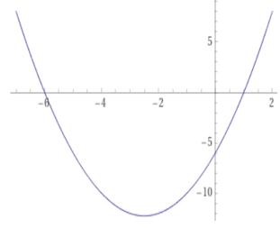
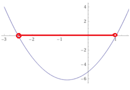
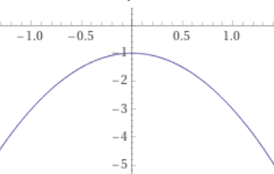

2. asteen yhtälöt ja epäyhtälöt
Sisällys
2. asteen yhtälöt ja epäyhtälöt¶
Toisen asteen yhtälön perusmuoto
\(a x^2 + bx + c = 0\)
Ongelma, joka voidaan ratkaista 2. asteen yhtälöllä
Esim. Suorakaiteen muotoista tonttia ympäröivän aidan pituus on 100 m ja tontin ala on 600 m². Määritä tontin sivujen pituudet.
Vastaus: Tontin sivut ovat 20 m ja 30 m.
Ratkaisu:
Merkitään tontin sivua x:llä. Toinen sivu on tällöin 50 - x ja tontin alan lauseke on x(50-x).
Ratkaistaan x yhtälöstä
\( x(50-x)=600\)
\( 50x-x^2=600\)
\( -x^2+50x-600 = 0\)
Käytetään ratkaisukaavaa \(x = \frac{-b\pm \sqrt{b^2-4ac}}{2a}\)
Sijoittamalla a=-1, b=50 ja c=-600 saadaan kaksi ratkaisua:
\( x = 20\) tai \(x = 30\)
Jos x=20, toinen sivu on 50-20=30. Toinen ratkaisu x=30 johtaa samoihin sivujen pituuksiin.
Vastaus: sivujen pituudet ovat siten 20 m ja 30 m
Toisen asteen yhtälön ratkaisumenetelmiä¶
Toisen asteen yhtälön ratkaisukaava
Perusmuotoinen 2. asteen yhtälö \(a x^2 + bx + c = 0\) voidaan aina ratkaista ratkaisukaavalla
\(x = \frac{-b\pm \sqrt{b^2-4ac}}{2a}\)
Ratkaise yhtälö \( 1.7 x^2 + 5.2x - 11.2 = 0\)
Vastaus: x = -4.52 tai x = 1.46
Ratkaisu:
Sijoitetaan ratkaisukaavaan a = 1.7, b =5.2 ja c = -11.2
\(x = \frac{-5.2\pm \sqrt{5.2^2-4\cdot1.7\cdot(-11.2)}}{2\cdot1.7}\)
x = -4.52 tai x = 1.46
Vaillinnainen 2. asteen yhtälö \(a x^2 + b\cdot x=0\)
Yhtälön vasen puoli voidaan kirjoittama tulomuodossa, jolloin yhtälö saa muodon
\(x(a x + b) = 0\)
Tulon nollasäännön mukaan tulo = 0 vain jos joku sen tekijöistä on nolla.
Siten x = 0 tai a x + b = 0. Jälkimmäisen yhtälön juuri on x = -b/a
Ratkaisut ovat siten \(x = 0\) tai \(x = -b/a\)
Ratkaise yhtälö \( 1.2 x^2 + 9.2 x = 0\)
Vastaus: x = -7.67 tai x = 1.46
Ratkaisu:
Otetaan vasemmalta puolen x yhteiseksi tekijäksi
\(x(1.2 x + 9.2) = 0\)
\(x = 0\) tai \(1.2 x + 9.2 = 0\)
\(x = 0\) tai \(x = -9.2/1.2 =- 7.67\)
Ratkaisut: x = -7.67 tai x = 0
Vaillinnainen 2. asteen yhtälö \(a x^2 + c=0\)
Ratkaistaan yhtälö 1. asteen yhtälön tapaan neliön \(x^2\) suhteen.
\( a x^2 = -c\) => \( x^2 = \frac{-c}{a}\)
Jos oikea puoli -c/a on negatiivinen, ei yhtälöllä ole ratkaisuja.
Jos -c/a on positiivinen, saadaan kaksi ratkaisua neliöjuuren otolla:
Ratkaisut ovat \(x = -\sqrt{-c/a}\) tai \(x = \sqrt{-c/a}\)
Ratkaise yhtälö \( 5.1 x^2 - 3.2 = 0\)
Vastaus: x = -0.79 tai x = 0.79
Ratkaisu:
Ratkaistaan yhtälö aluksi \(x^2\):n suhteen
\( 5.1 x^2 = 3.2\)
\( x^2 = 3.2/5.1 = 0.627\)
Ratkaistaan lopuksi x:
\(x = \pm \sqrt{0.627} = \pm 0.79\)
Ratkaisut: x = -0.79 tai x = 0.79
Toisen asteen yhtälön graafinen ratkaiseminen
Toisen asteen polynomifunktion \(y = a x^2 + b x + c\) kuvaaja on paraabeli.
Perusmuotoinen 2. asteen yhtälö \(a x^2 + b x + c = 0\) voidaan ratkaista grafiikkalaskimella piirtämällä yhtälön vasemman puolen polynomifunktion kuvaaja. Yhtälön ratkaisut voidaan lukea paraabelin ja x-akselin leikkauspisteistä.
Esimerkki. Ratkaise yhtälö \(x^2+5x-6=0\) graafisesti.
WolframAlpha:n plot
WolframAlpha.com -laskimessa funktion kuvaaja piirretään komennolla plot
esim. plot \(x^2+5x-6\)
Piirrettävää kohtaa kuvaajasta voi tarkentaa from … to… määreillä muotoon
plot \(x^2+5x-6\) from -8 to 3

Kuvaajasta luettu yhtälön ratkaisu on seuraava. x = -6 tai x = 1
2. asteen yhtälön juurten lukumäärä¶
Toisen asteen yhtälön ratkaisukaavassa \(x = \frac{-b\pm \sqrt{b^2-4ac}}{2a}\) neliöjuuren sisällä olevaa lauseketta \(b^2 - 4 a c\) kutsutaan diskriminantiksi
Diskriminantin etumerkki määrää yhtälön ratkaisujen lukumäärän.
Toisen asteen yhtälön ratkaisujen lukumäärä
Yhtälön \(a x^2 + b x + c = 0\) diskriminantti D = \(b^2 - 4 a c\)
Jos D > 0, yhtälöllä on kaksi eri suurta reaalijuurta
Jos D > 0, yhtälöllä ei ole reaalisia ratkaisuja
Jos D = 0, yhtälöllä on yksi reaalinen ratkaisu
2. asteen epäyhtälöt¶
Toisen asteen epäyhtälö voidaan ratkaista esim. seuraavasti:
Viedään yhtälö perusmuotoon \(a x^2+b x + c > 0\) (erisuuruusmerkki voi olla myös \(\lt\),\(\ge\) tai \(\le\).
Ratkaistaan yhtälön \(a x^2 + b x + c = 0\) juuret, mikäli niitä on
Piirretään paraabeli \(y = a x^2 + b x + c \)
Kirjoitetaan yhtälön ratkaisu kuvaajan ja juurten avulla.
Ratkaise epäyhtälö \( 2 x^2 + 3 x -5 < 0\)
Vastaus: \(-\frac{5}{2}< x < 1\)
Ratkaisu:
Ratkaistaan yhtälö \( 2 x^2 + 3 x -5 = 0\) esim. laskimen solve:lla. Juuret ovat -5/2 ja 1
Piirretään käyrä y = \( 2 x^2 + 3 x -5 \) , joka aukeaa ylös leikaten x-akselia kohdissa -5/2 ja 1.
Todetaan, että epäyhtälö toteutuu juurten välissä.
Ratkaisu ilmoitetaan kaksoisepäyhtälönä \(-\frac{5}{2}< x < 1\)

Ratkaise epäyhtälö \( -2 x^2 - 1 < 0\)
Vastaus: ratkaisuna kaikki reaaliluvut
Ratkaisu:
Ratkaistaan aluksi yhtälö \( -2 x^2 -1 = 0\)
Muodosta \(x^2 = -1/2\) nähdään että juuria ei ole
Paraabeli y = \( -2 x^2 -1 \) aukeaa alas ja sijaitsee kokonaisuudessaan x- akselin alapuolella.
Todetaan, että epäyhtälö on aina voimassa
Ratkaisu ilmoitetaan joko sanallisessa muodossa ”ratkaisuna kaikki reaaliluvut”
tai ratkaisujoukkona Rj = \(\mathbb{R}\)

2. asteen yhtälön ratkaisujen esitystapoja¶
Epäyhtälön ratkaisuna saadaan tyypillisesti lukusuoralla juurten välinen tai juurten ulkopuolella oleva alue. Jos epäyhtälöä vastaavalla yhtälöllä ei ole juuria, on mahdollista, että ratkaisuja ei ole tai että ratkaisujoukko käsittää kaikki reaaliluvut.
Eri ratkaisuvaihtoehdot voidaan esittää joko epäyhtälöinä tai joukko-opin merkintöjä käyttäen
Epäyhtälömerkintä |
”Ratkaisujoukko” -merkintä |
|---|---|
\(-1\lt x\lt 3\) |
]-1,3[ |
\(-1\le x \le2\) |
[-1,3] |
\(x\le-1\) tai \(x\ge3\) |
\(]-\infty,1]\cup [3,\infty]\) |
ei ratkaisua |
{} |
ratkaisuna kaikki reaaliluvut |
\(\mathbb{R}\) |
\(*)\) {} tarkoittaa tyhjää joukkoa, jota voidaan myös merkitä symbolilla \(\emptyset\)
Välimerkinnöissä \([a,b]\) ja \(]a,b[\) sulkujen suunta kertoo, ovatko päätepisteet mukana (ks. taulukko)